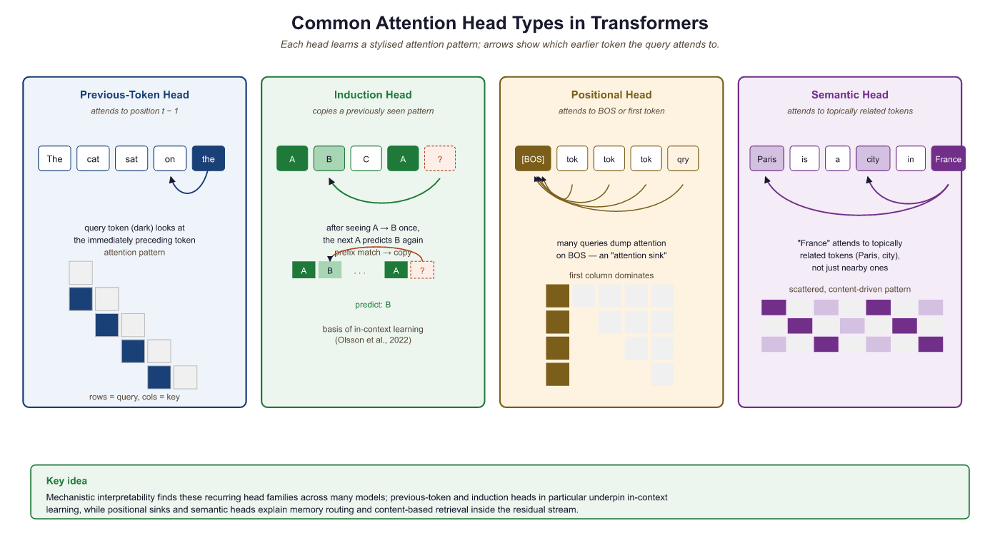
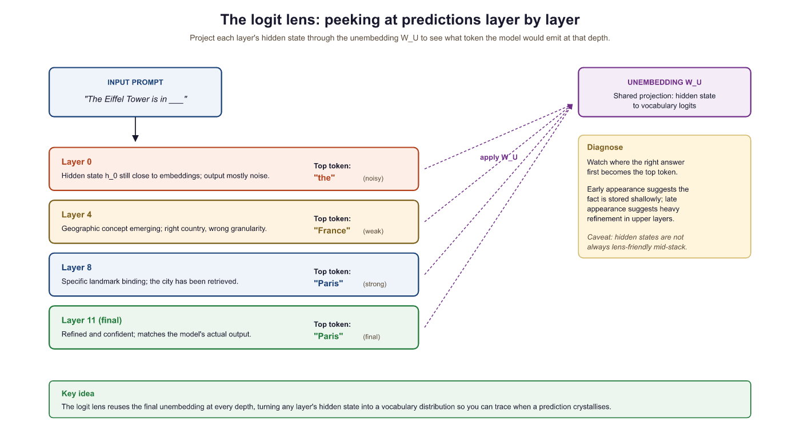

"The question is not whether neural networks are black boxes. The question is whether we have the right flashlights."
Probe, Flashlight Wielding AI Agent
Prerequisites
This section builds on softmax architecture from Section 4.1: Transformer Architecture Deep Dive and Section 6.1 covered in Section 6.1: The Landmark Models.
Attention patterns and probing classifiers are the most accessible tools for understanding what transformers learn. Attention weights reveal which tokens the model considers when making predictions, while probing classifiers test what information (syntax, semantics, world knowledge) is encoded in hidden states at each layer. Combined with the logit lens, which projects intermediate representations into vocabulary space, these tools provide a layered view of how transformers transform input tokens into output predictions. The multi-head attention mechanism from Section 3.3 is the primary object of study here.
10.1.1 Attention Visualization
Mechanistic interpretability is the empirical study of Thesis 5 (Modularity): the discovery that transformers, although trained as monolithic optimization problems, develop modular internal structure (induction heads, name-mover circuits, indirect-object identifiers, residual-stream highways). This modularity emerged from optimization, not architecture. The methods in this chapter (attention visualization, probing classifiers, logit lens, circuit analysis) are how we discover and verify those modules. Connect this to Thesis 1 (Compression): the modules are compressed primitives that the model learned because they were the most efficient way to predict the training distribution. Refer to the Conceptual Map.
In Chapter 04, we learned that every transformer layer computes attention weights: a matrix that specifies how much each token attends to every other token (recall the query-key-value mechanism from Section 4.2). Visualizing these weights provides an immediate, intuitive window into the model's computation. However, interpreting attention requires care: attention weights do not directly indicate which tokens are "important" for the prediction (as we discuss in Section 10.4).
The following snippet demonstrates how to extract attention weights from a GPT-2 model and visualize a specific attention head as a heatmap.
# Extracting and visualizing attention patterns
import torch
from transformers import AutoModelForCausalLM, AutoTokenizer
import matplotlib.pyplot as plt
import numpy as np
model_name = "gpt2"
tokenizer = AutoTokenizer.from_pretrained(model_name)
model = AutoModelForCausalLM.from_pretrained(
model_name, output_attentions=True
)
text = "The cat sat on the mat because it was tired"
inputs = tokenizer(text, return_tensors="pt")
with torch.no_grad():
outputs = model(**inputs)
# outputs.attentions is a tuple of (num_layers,) tensors
# Each tensor has shape (batch, num_heads, seq_len, seq_len)
attentions = outputs.attentions
print(f"Number of layers: {len(attentions)}")
print(f"Attention shape per layer: {attentions[0].shape}")
tokens = tokenizer.convert_ids_to_tokens(inputs["input_ids"][0])
def plot_attention_head(attention_matrix, tokens, layer, head):
"""Plot a single attention head as a heatmap."""
fig, ax = plt.subplots(figsize=(8, 6))
attn = attention_matrix[0, head].numpy() # (seq_len, seq_len)
im = ax.imshow(attn, cmap="Blues", vmin=0, vmax=1)
ax.set_xticks(range(len(tokens)))
ax.set_yticks(range(len(tokens)))
ax.set_xticklabels(tokens, rotation=45, ha="right", fontsize=8)
ax.set_yticklabels(tokens, fontsize=8)
ax.set_xlabel("Key (attending to)")
ax.set_ylabel("Query (attending from)")
ax.set_title(f"Layer {layer}, Head {head}")
plt.colorbar(im)
plt.tight_layout()
return fig
# Visualize a specific head
fig = plot_attention_head(attentions[5], tokens, layer=5, head=1)
plt.savefig("attention_head_L5_H1.png", dpi=150)output_attentions=True flag instructs the model to return attention matrices for every layer.BertViz provides interactive, publication-quality attention visualizations in one call:
from bertviz import head_view
from transformers import AutoModel, AutoTokenizer
model = AutoModel.from_pretrained("gpt2", output_attentions=True)
tokenizer = AutoTokenizer.from_pretrained("gpt2")
inputs = tokenizer("The cat sat on the mat", return_tensors="pt")
outputs = model(**inputs)
head_view(outputs.attentions, tokenizer.convert_ids_to_tokens(inputs["input_ids"][0]))
# Opens an interactive HTML widget in Jupyter# Production equivalent using scikit-learn
from sklearn.linear_model import LogisticRegression
from sklearn.model_selection import cross_val_score
# X = extracted hidden states (n_tokens, hidden_dim), y = labels
probe = LogisticRegression(max_iter=1000)
scores = cross_val_score(probe, X, y, cv=5)
print(f"Probe accuracy: {scores.mean():.3f} +/- {scores.std():.3f}")pip install bertviz
10.1.1.1 Common Attention Patterns
Research has identified several recurring attention patterns across transformer models. These patterns appear consistently regardless of model size, training data, or architecture variant, suggesting they represent fundamental computational primitives. catalogs the most common types.
Think of attention analysis as an X-ray machine for neural networks. Attention weights show you which input tokens the model 'looked at' when producing each output, much like an X-ray shows which bones are connected. Probing classifiers go deeper: they test whether specific information (part-of-speech, entity type) is actually stored in the hidden layers. The caution is that attention weights show correlation, not causation: a head may attend to a token without that attention being the reason for the model's output.
Attention visualization looks deceptively simple: just plot which tokens attend to which. In practice, a 32-layer, 32-head transformer produces 1,024 attention matrices for a single input, which is less "insightful heatmap" and more "wall of colored noise" without careful filtering.

The following table summarizes these common attention head types, noting where each typically appears and what computational role it serves.
| Pattern | Layer Position | Function | Importance |
|---|---|---|---|
| Previous-token | Early (L0-L2) | Local context aggregation | Foundation for n-gram statistics |
| Induction heads | Early-mid (L1-L6) | Pattern copying from context | Core mechanism for in-context learning |
| Positional/sink | All layers | Attend to BOS or delimiters | Default when no specific pattern matches |
| Duplicate-token | Mid layers | Flag repeated tokens | Important for copy and repetition tasks |
| Semantic | Late layers | Attend to related meaning | Task-specific information retrieval |
Attention weights show where the model "looks" but not what it "sees." High attention to a token does not necessarily mean that token is important for the prediction. For example, many heads attend strongly to the beginning-of-sequence token or punctuation marks, not because these tokens carry useful information, but because the model uses them as a "default" when no specific pattern is relevant. The value vectors determine what information is extracted, and the subsequent softmax further transform the representation. Jain and Wallace (2019) demonstrated that randomly permuting attention weights often does not change the model's output, confirming that attention alone is an unreliable explanation. Use attention visualization as a starting point for investigation, not as definitive evidence of model reasoning.
10.1.1.2 The Attention Debate: 2024-2025 Resolution
For years, the interpretability community was stuck in a binary argument: "attention is explanation" versus "attention is not explanation." Jain and Wallace (2019) argued the latter; Wiegreffe and Pinter (2019) pushed back with evidence that attention can be meaningful. By 2024-2025, a more nuanced consensus has emerged that transcends this binary framing. The short answer: attention weights alone are not explanations, but attention patterns combined with complementary methods (probing, ablation, circuit analysis) are genuinely informative.
Why does this resolution matter? If you dismiss attention entirely, you lose the cheapest and fastest window into model behavior. If you trust attention uncritically, you build explanations on shaky ground. The modern consensus gives practitioners a principled middle path: use attention as a hypothesis generator, then validate with causal methods.
The 2024-2025 consensus on attention interpretability rests on three findings. First, attention patterns are informative when combined with value-weighted analysis (OV circuits). What matters is not just where the model looks, but what information gets extracted through the value vectors. Second, activation patching (Section 10.2) can validate whether a specific attention head is causally responsible for a behavior, turning correlational attention patterns into causal evidence. Third, attention heads participate in larger circuits; interpreting a single head in isolation is like reading one sentence from a paragraph. The induction head circuit (two heads composing across layers) is the canonical example of why circuit-level analysis supersedes single-head analysis.
In practice, this consensus translates to a three-step workflow for using attention in interpretability. First, visualize attention to generate hypotheses ("Head L5H3 seems to track coreference"). Second, validate the hypothesis using ablation or activation patching ("zeroing out L5H3 breaks coreference resolution but not other tasks"). Third, connect the finding to the broader circuit by examining which other heads and MLP layers interact with L5H3 using tools like TransformerLens (see Section 10.2 for the tooling).
# Attention + ablation validation workflow
import transformer_lens
from transformer_lens import HookedTransformer
import torch
model = HookedTransformer.from_pretrained("gpt2-small")
prompt = "The nurse told the doctor that she was ready"
clean_logits, clean_cache = model.run_with_cache(prompt)
# Step 1: Identify candidate head via attention pattern
# (e.g., head L5H3 attends from "she" to "nurse")
# Step 2: Validate causally by ablating the head
def ablate_head(activation, hook):
"""Zero out a specific attention head's output."""
activation[:, :, 3, :] = 0 # head index 3
return activation
ablated_logits = model.run_with_hooks(
prompt,
fwd_hooks=[("blocks.5.attn.hook_z", ablate_head)]
)
# Step 3: Compare predictions with and without the head
she_token = model.to_single_token(" she")
nurse_token = model.to_single_token(" nurse")
clean_prob = torch.softmax(clean_logits[0, -1], dim=-1)
ablated_prob = torch.softmax(ablated_logits[0, -1], dim=-1)
print(f"With L5H3: P(nurse-related) = {clean_prob[nurse_token]:.4f}")
print(f"Without L5H3: P(nurse-related) = {ablated_prob[nurse_token]:.4f}")
# A significant drop confirms the head is causally importantProbing classifiers are small models trained to extract specific information from a larger model's internal representations. It is like giving a brain scan to a neural network: you cannot ask it what it knows, but you can check whether the information is in there.
Why do we care about interpretability beyond intellectual curiosity? Because of an asymmetry that gets worse as models scale. Call it the alignment verification gap: as model capability grows, the tasks we need to verify (complex reasoning, long-horizon planning, scientific judgement) become harder for human evaluators and simpler verifiers. At GPT-3 capability, RLHF worked because human raters could reliably judge outputs. At GPT-4 capability, scalable oversight (Bowman et al. 2022) became necessary. At future capability levels, neither humans nor smaller models may be able to verify what a frontier model is doing — which is exactly the regime where mistakes become catastrophic.
Mechanistic interpretability is the field's most credible attempt to close this gap. If we can read the model's internal computations directly (induction heads, name-mover circuits, sparse-autoencoder features), we do not have to trust an evaluator who is weaker than the model under evaluation. This is the bridge between Chapter 17 (alignment), Chapter 28 (evaluation), Chapter 30 (safety), and the chapter you are reading now.
Two key references for this bridge:
- Burns et al. (2023), Weak-to-Strong Generalization (arXiv:2312.09390) — the empirical study of whether a weak supervisor can elicit aligned behavior from a stronger model.
- Bowman et al. (2022), Measuring Progress on Scalable Oversight (arXiv:2211.03540) — the framework that names the problem.
Templeton et al. (2024) Scaling Monosemanticity (sparse autoencoders on Claude 3 Sonnet) is the most recent operational milestone for closing the gap.
10.1.2 Probing Classifiers
Probing classifiers provide a more rigorous way to test what information is encoded in a model's hidden representations. The idea is simple: extract hidden states from a specific layer, freeze them, and train a lightweight classifier on top to predict some property of interest (part of speech, syntactic dependency, semantic role, entity type). If the classifier succeeds, the property is encoded in the hidden states.
Below, we implement both a linear and nonlinear probing classifier for testing what linguistic information is encoded in each transformer layer. Code Fragment 10.1.3 shows this approach in practice.
Show 84 lines of code
# Probing classifier for linguistic properties
import torch
import torch.nn as nn
from torch.utils.data import DataLoader, TensorDataset
from transformers import AutoModel, AutoTokenizer
from sklearn.metrics import accuracy_score
import numpy as np
class LinearProbe(nn.Module):
"""A simple linear probe for testing representation content."""
def __init__(self, hidden_dim, num_classes):
super().__init__()
self.classifier = nn.Linear(hidden_dim, num_classes)
def forward(self, hidden_states):
return self.classifier(hidden_states)
class MLPProbe(nn.Module):
"""A nonlinear probe with one hidden layer."""
def __init__(self, hidden_dim, num_classes, probe_dim=256):
super().__init__()
self.net = nn.Sequential(
nn.Linear(hidden_dim, probe_dim),
nn.ReLU(),
nn.Dropout(0.1),
nn.Linear(probe_dim, num_classes),
)
def forward(self, hidden_states):
return self.net(hidden_states)
def extract_hidden_states(model, tokenizer, texts, layer_idx):
"""Extract hidden states from a specific layer."""
model.eval()
all_hidden = []
for text in texts:
inputs = tokenizer(text, return_tensors="pt", truncation=True)
with torch.no_grad():
outputs = model(**inputs, output_hidden_states=True)
# Get hidden states from the specified layer
# Shape: (1, seq_len, hidden_dim)
hidden = outputs.hidden_states[layer_idx]
all_hidden.append(hidden.squeeze(0))
return all_hidden
def train_probe(
hidden_states, # list of (seq_len, hidden_dim) tensors
labels, # list of (seq_len,) label tensors
num_classes,
probe_type="linear",
epochs=10,
lr=1e-3,
):
"""Train a probing classifier on frozen hidden states."""
# Flatten all tokens into a single dataset
X = torch.cat(hidden_states, dim=0)
y = torch.cat(labels, dim=0)
hidden_dim = X.shape[1]
if probe_type == "linear":
probe = LinearProbe(hidden_dim, num_classes)
else:
probe = MLPProbe(hidden_dim, num_classes)
optimizer = torch.optim.Adam(probe.parameters(), lr=lr)
criterion = nn.CrossEntropyLoss()
dataset = TensorDataset(X, y)
loader = DataLoader(dataset, batch_size=256, shuffle=True)
for epoch in range(epochs):
total_loss = 0
for batch_x, batch_y in loader:
logits = probe(batch_x)
loss = criterion(logits, batch_y)
optimizer.zero_grad()
loss.backward()
optimizer.step()
total_loss += loss.item()
if (epoch + 1) % 5 == 0:
print(f"Epoch {epoch+1}: loss={total_loss/len(loader):.4f}")
return probe
# Example: Probe for part-of-speech tags across layers
model = AutoModel.from_pretrained("gpt2")
tokenizer = AutoTokenizer.from_pretrained("gpt2")
# For each layer, train a probe and measure accuracy
layer_accuracies = {}
for layer in range(model.config.num_hidden_layers + 1):
hidden = extract_hidden_states(model, tokenizer, train_texts, layer)
probe = train_probe(hidden, pos_labels, num_pos_tags, "linear")
# evaluate_probe: run probe on validation hidden states,
# compare predictions to val_labels, return accuracy
acc = evaluate_probe(probe, val_hidden, val_labels)
layer_accuracies[layer] = acc
print(f"Layer {layer}: POS accuracy = {acc:.3f}")
The implementation above builds probing classifiers with a custom PyTorch training loop for pedagogical clarity. For quick probing experiments, scikit-learn (install: pip install scikit-learn) provides a faster workflow that avoids manual training loops:
# Control task for validating probe results
import random
def run_probing_experiment_with_control(
model, tokenizer, texts, labels, num_classes, layer_idx
):
"""Run probing with control task to measure selectivity."""
hidden = extract_hidden_states(model, tokenizer, texts, layer_idx)
# Real task probe
# val_hidden and val_labels are computed from a held-out set
# using extract_hidden_states() and the same label pipeline
real_probe = train_probe(hidden, labels, num_classes, "linear")
real_acc = evaluate_probe(real_probe, val_hidden, val_labels)
# Control task: shuffle labels to create random assignment
control_labels = [
torch.randint(0, num_classes, label.shape)
for label in labels
]
control_probe = train_probe(hidden, control_labels, num_classes, "linear")
# val_control_labels: same random mapping applied to validation set
control_acc = evaluate_probe(control_probe, val_hidden, val_control_labels)
selectivity = real_acc - control_acc
return {
"real_accuracy": real_acc,
"control_accuracy": control_acc,
"selectivity": selectivity,
"meaningful": selectivity > 0.1, # threshold
}The lab exercise later in this section demonstrates this approach.
10.1.2.1 Control Tasks
A common criticism of probing is that a powerful enough probe might learn the task itself rather than reflecting what the model has learned. Control tasks (Hewitt and Liang, 2019) address this by training the same probe on a random labeling of the data. If the probe achieves high accuracy on both the real task and the control task, the probe is too powerful, and the result is not meaningful.
The selectivity of a probe (real accuracy minus control accuracy) is a better measure than raw accuracy. A linear probe that achieves 90% on POS tagging but 30% on random labels has selectivity of 60%, indicating the representation genuinely encodes POS information. An MLP probe that achieves 95% on POS tagging but 85% on random labels has selectivity of only 10%, suggesting the probe itself is doing most of the work.
Who: Data scientist at a consumer electronics company
Situation: A fine-tuned BERT model for product review sentiment consistently misclassified sarcastic reviews ("Great, another phone that dies by noon") as positive.
Problem: Standard error analysis showed the pattern but not the cause; the model appeared to rely on positive keywords while ignoring negation and context cues.
Dilemma: Adding more sarcastic examples to the training set helped marginally, but the team could not tell whether the model was learning surface heuristics or genuinely understanding sentiment.
Decision: They used linear probing across all 12 BERT layers to test whether sarcasm was represented in the model's internal activations, even if the classification head ignored it.
How: They labeled 500 reviews as sarcastic or literal, extracted hidden states from each layer, and trained linear probes. They also ran a control task with randomized labels to measure probe selectivity.
Result: The probe found sarcasm information was present in layers 8 through 11 (72% accuracy, selectivity 38%), confirming the model encoded sarcasm but the classification head failed to use it. Re-training with a weighted loss on sarcastic examples improved sarcasm detection from 41% to 79% F1.
Lesson: Probing reveals what information a model has versus what it uses; when a model "knows" something internally but predicts incorrectly, the fix is in the task head or loss function, not the representations. Code Fragment 10.1.4 shows this approach in practice.
# Using the tuned lens package
# pip install tuned-lens
from tuned_lens import TunedLens
from transformers import AutoModelForCausalLM, AutoTokenizer
model = AutoModelForCausalLM.from_pretrained("gpt2")
tokenizer = AutoTokenizer.from_pretrained("gpt2")
# Load pre-trained tuned lens for GPT-2
tuned = TunedLens.from_model_and_pretrained(model)
text = "The capital of France is"
inputs = tokenizer(text, return_tensors="pt")
with torch.no_grad():
outputs = model(**inputs, output_hidden_states=True)
hidden_states = outputs.hidden_states
# Apply tuned lens at each layer
for layer_idx in range(len(hidden_states) - 1):
# Tuned lens applies a learned affine transform
logits = tuned(hidden_states[layer_idx], layer_idx)
probs = F.softmax(logits[0, -1], dim=-1)
top_token = tokenizer.decode(probs.argmax())
top_prob = probs.max().item()
print(f"Layer {layer_idx:2d}: '{top_token}' (p={top_prob:.3f})")10.1.3 The Logit Lens
The logit lens (nostalgebraist, 2020) is a technique for inspecting what a transformer "thinks" at each intermediate layer. The idea is to take the hidden state at any layer and project it through the model's final unembedding matrix (the same matrix used to produce the output logits). This reveals the model's current "best guess" for the next token at each point in the computation. Figure 10.1.3 illustrates how predictions sharpen from noisy early layers to confident later layers. Code Fragment 10.1.5 shows this approach in practice.

The following implementation projects each layer's hidden state through the unembedding matrix, revealing the model's intermediate "best guess" at each stage of computation.
Code Fragment 10.1.5 applies the logit lens.
# Logit Lens Implementation
import torch
import torch.nn.functional as F
from transformers import AutoModelForCausalLM, AutoTokenizer
def logit_lens(model, tokenizer, text, top_k=5):
"""
Apply the logit lens to see what the model predicts
at each intermediate layer.
"""
inputs = tokenizer(text, return_tensors="pt")
with torch.no_grad():
outputs = model(**inputs, output_hidden_states=True)
hidden_states = outputs.hidden_states # (num_layers+1,) tuple
# Get the unembedding matrix
unembed = model.lm_head.weight # (vocab_size, hidden_dim)
tokens = tokenizer.convert_ids_to_tokens(inputs["input_ids"][0])
last_pos = len(tokens) - 1 # predict next token after last
print(f"Input: {text}")
print(f"Predicting token after: '{tokens[last_pos]}'")
print("-" * 50)
for layer_idx, hidden in enumerate(hidden_states):
# Project hidden state through unembedding
# hidden shape: (1, seq_len, hidden_dim)
logits = hidden[0, last_pos] @ unembed.T # (vocab_size,)
probs = F.softmax(logits, dim=-1)
top_probs, top_ids = probs.topk(top_k)
top_tokens = [tokenizer.decode(tid) for tid in top_ids]
top_str = ", ".join(
f"'{t}' ({p:.3f})" for t, p in zip(top_tokens, top_probs)
)
print(f"Layer {layer_idx:2d}: {top_str}")
# Run logit lens on GPT-2
model = AutoModelForCausalLM.from_pretrained("gpt2")
tokenizer = AutoTokenizer.from_pretrained("gpt2")
logit_lens(model, tokenizer, "The Eiffel Tower is in")Copy the logit lens code above into a notebook and try it on different prompts: "The CEO of Apple is," "Water freezes at," or "The largest planet is." Watch how the correct answer emerges at different layers for different types of knowledge. Some facts crystallize early (well-known associations); others take more layers to resolve (multi-step reasoning).
10.1.3.1 The Tuned Lens
The tuned lens (Belrose et al., 2023) improves on the logit lens by training a learned affine transformation for each layer. The raw logit lens assumes that intermediate representations are approximately in the same space as the final layer, which is only roughly true. The tuned lens trains a small per-layer probe to account for the differences in representation spaces across layers.
The tuned lens provides cleaner, more interpretable results than the raw logit lens, especially in early layers where representations are furthest from the output space. The training cost is minimal (a single linear layer per transformer layer), and pre-trained tuned lens parameters are available for popular models via the tuned-lens Python package. Code Fragment 10.1.6 shows this approach in practice.
# Tokenization pipeline: text -> token IDs -> embeddings.
# The tokenizer adds special tokens (BOS/EOS) and handles padding/truncation.
from transformers import AutoTokenizer, AutoModelForCausalLM
import torch
model_id = "gpt2"
tok = AutoTokenizer.from_pretrained(model_id)
model = AutoModelForCausalLM.from_pretrained(model_id, output_hidden_states=True)
model.eval()
text = "The Eiffel Tower is located in"
encoded = tok(text, return_tensors="pt")
print(f"Tokens : {tok.convert_ids_to_tokens(encoded.input_ids[0])}")
print(f"IDs : {encoded.input_ids[0].tolist()}")
print(f"Attn : {encoded.attention_mask[0].tolist()}")
with torch.no_grad():
out = model(**encoded)
# Last hidden state shape: (batch, seq_len, d_model)
print(f"Hidden : {out.hidden_states[-1].shape}") # e.g. (1, 7, 768)Show Answer
Show Answer
Show Answer
Show Answer
Show Answer
Pick a GPT-2 attention head (for example, Layer 5, Head 1) and visualize its attention pattern on three different sentences: one with a pronoun reference ("The cat chased the mouse because it was hungry"), one with a repeated word ("the dog chased the dog"), and one with a list ("I like apples, bananas, and oranges"). Can you classify the head's pattern type using the taxonomy from this section?
✅ Key Takeaways
- Attention visualization reveals recurring patterns (previous-token, induction, positional, semantic heads) that represent fundamental computational primitives in transformers.
- Attention weights show where the model looks but not what it learns; use them as starting points, not definitive explanations.
- Probing classifiers test what information is encoded in hidden states. Control tasks are essential to validate that probes measure representation content rather than probe capacity.
- The logit lens projects intermediate hidden states into vocabulary space, revealing how predictions are refined incrementally across layers.
- The tuned lens improves on the logit lens by learning per-layer affine transformations that account for differences in representation spaces.
- Together, these tools provide a layered view of transformer computation: what the model attends to, what it encodes, and what it predicts at each stage.
Hands-On Lab: Visualize Attention Patterns and Build a Probing Classifier
Objective
Extract and visualize attention patterns from GPT-2, identify interpretable attention heads, and train a linear probing classifier to test what linguistic information is encoded in hidden states at each layer.
What You'll Practice
- Extracting attention weight matrices from transformer layers
- Creating attention heatmaps with matplotlib and seaborn
- Identifying attention head specialization (positional, syntactic, semantic)
- Building linear probes to detect part-of-speech information in hidden states
Setup
The following cell installs the required packages and configures the environment for this lab.
pip install transformers torch matplotlib seaborn numpy scikit-learnSteps
Step 1: Extract attention weights from GPT-2
Run a sentence through GPT-2 and capture attention weights from every layer and head.
import torch
from transformers import AutoModelForCausalLM, AutoTokenizer
import numpy as np
model_name = "gpt2"
tokenizer = AutoTokenizer.from_pretrained(model_name)
model = AutoModelForCausalLM.from_pretrained(
model_name, output_attentions=True)
model.eval()
text = "The cat sat on the mat because it was comfortable"
inputs = tokenizer(text, return_tensors="pt")
tokens = tokenizer.convert_ids_to_tokens(inputs['input_ids'][0])
with torch.no_grad():
outputs = model(**inputs)
# outputs.attentions: tuple of (num_layers,) tensors
attentions = outputs.attentions
print(f"Layers: {len(attentions)}")
print(f"Shape per layer: {attentions[0].shape}")
print(f"Tokens: {tokens}")
# TODO: Stack into (layers, heads, seq, seq) numpy array
all_attn = torch.stack(attentions).squeeze(1).numpy()
print(f"All attention shape: {all_attn.shape}")output_attentions=True. The resulting 4D array (layers, heads, query position, key position) provides the raw data for visualizing how the model routes information.Hint
Use torch.stack(attentions).squeeze(1).numpy() to get a (12, 12, seq_len, seq_len) array for GPT-2 (12 layers, 12 heads).
Step 2: Create attention heatmaps
Visualize attention patterns for all 12 heads in layer 0 to see different attention strategies.
import matplotlib.pyplot as plt
import seaborn as sns
def plot_attention_head(attn_matrix, tokens, layer, head, ax):
sns.heatmap(attn_matrix, xticklabels=tokens, yticklabels=tokens,
cmap='Blues', ax=ax, vmin=0, vmax=1)
ax.set_title(f'L{layer}H{head}', fontsize=9)
ax.tick_params(labelsize=6)
# TODO: Create a 3x4 grid for all 12 heads in layer 0
fig, axes = plt.subplots(3, 4, figsize=(20, 15))
for h in range(12):
row, col = h // 4, h % 4
plot_attention_head(all_attn[0, h], tokens, 0, h, axes[row, col])
plt.tight_layout()
plt.savefig('attention_heads_layer0.png', dpi=100)
plt.show()Hint
Look for heads showing: diagonal lines (positional/local attention), vertical stripes (attending to specific tokens like periods or commas), or broad patterns (attending broadly). These reveal different computational strategies.
Step 3: Analyze coreference attention
Examine which token "it" attends to most strongly, looking for coreference resolution.
# Find token positions
it_pos = tokens.index("Ġit") if "Ġit" in tokens else tokens.index("it")
cat_pos = tokens.index("Ġcat") if "Ġcat" in tokens else tokens.index("cat")
print(f"'it' at position {it_pos}, 'cat' at position {cat_pos}")
# Find heads that show strong it-to-cat attention
print("\nAttention from 'it' to 'cat' by layer:")
for layer in range(len(attentions)):
for head in range(12):
attn_score = all_attn[layer, head, it_pos, cat_pos]
if attn_score > 0.1:
print(f" Layer {layer}, Head {head}: {attn_score:.3f}")Hint
GPT-2 tokenization adds a "Ġ" prefix for tokens preceded by a space. If the exact token is not found, print tokens to see the exact tokenization.
Step 4: Build a linear probing classifier
Train a linear classifier on hidden states to detect part-of-speech tags, testing what syntactic information each layer encodes.
from sklearn.linear_model import LogisticRegression
from sklearn.model_selection import cross_val_score
probe_data = [
("The dog chased the cat", ["DET","NOUN","VERB","DET","NOUN"]),
("A bird flew over trees", ["DET","NOUN","VERB","ADP","NOUN"]),
("She quickly ran home today", ["PRON","ADV","VERB","NOUN","ADV"]),
("Big waves crashed on shore", ["ADJ","NOUN","VERB","ADP","NOUN"]),
("They slowly walked to school", ["PRON","ADV","VERB","ADP","NOUN"]),
("My friend reads many books", ["DET","NOUN","VERB","DET","NOUN"]),
("The tall man opened doors", ["DET","ADJ","NOUN","VERB","NOUN"]),
("We often eat fresh food", ["PRON","ADV","VERB","ADJ","NOUN"]),
]
def extract_hidden(model, tokenizer, text, layer):
inputs = tokenizer(text, return_tensors="pt")
with torch.no_grad():
out = model(**inputs, output_hidden_states=True)
return out.hidden_states[layer][0].numpy()
# TODO: For each layer, collect hidden states and POS labels,
# then train a LogisticRegression probe and report accuracy.
for layer in [0, 3, 6, 9, 11]:
X, y = [], []
for text, pos_tags in probe_data:
hidden = extract_hidden(model, tokenizer, text, layer)
toks = tokenizer.convert_ids_to_tokens(
tokenizer(text)['input_ids'])
for i, tag in enumerate(pos_tags):
if i < hidden.shape[0]:
X.append(hidden[i])
y.append(tag)
X = np.array(X)
clf = LogisticRegression(max_iter=1000, random_state=42)
scores = cross_val_score(clf, X, y, cv=3, scoring='accuracy')
print(f"Layer {layer}: POS probe accuracy = "
f"{scores.mean():.3f} (+/- {scores.std():.3f})")Hint
Accuracy should increase in middle layers (3 to 6) where syntactic features are most prominent. Earlier layers capture more surface-level features; later layers focus on next-token prediction.
Expected Output
- A grid of 12 attention heatmaps showing distinct head patterns (positional, broad, specific)
- At least one head showing coreference attention from "it" to "cat"
- POS probing accuracy increasing from ~40% at layer 0 to ~60 to 70% at middle layers
Stretch Goals
- Implement the logit lens: project hidden states at each layer through the final unembedding matrix to see predicted tokens at each layer
- Probe for other properties: named entities, sentence boundaries, or syntactic depth
- Compare patterns between GPT-2 small and GPT-2 medium
Complete Solution
import torch, numpy as np, matplotlib.pyplot as plt, seaborn as sns
from transformers import AutoModelForCausalLM, AutoTokenizer
from sklearn.linear_model import LogisticRegression
from sklearn.model_selection import cross_val_score
tokenizer = AutoTokenizer.from_pretrained("gpt2")
model = AutoModelForCausalLM.from_pretrained("gpt2", output_attentions=True)
model.eval()
text = "The cat sat on the mat because it was comfortable"
inputs = tokenizer(text, return_tensors="pt")
tokens = tokenizer.convert_ids_to_tokens(inputs['input_ids'][0])
with torch.no_grad(): outputs = model(**inputs)
all_attn = torch.stack(outputs.attentions).squeeze(1).numpy()
# Heatmaps
fig, axes = plt.subplots(3, 4, figsize=(20, 15))
for h in range(12):
sns.heatmap(all_attn[0,h], xticklabels=tokens, yticklabels=tokens,
cmap='Blues', ax=axes[h//4, h%4], vmin=0, vmax=1)
axes[h//4, h%4].set_title(f'L0H{h}', fontsize=9)
axes[h//4, h%4].tick_params(labelsize=6)
plt.tight_layout(); plt.savefig('attention_heads.png'); plt.show()
# Coreference
it_pos = tokens.index("Ġit") if "Ġit" in tokens else tokens.index("it")
cat_pos = tokens.index("Ġcat") if "Ġcat" in tokens else tokens.index("cat")
for l in range(12):
for h in range(12):
a = all_attn[l, h, it_pos, cat_pos]
if a > 0.1: print(f"L{l}H{h}: it->cat = {a:.3f}")
# Probing
probe_data = [
("The dog chased the cat", ["DET","NOUN","VERB","DET","NOUN"]),
("A bird flew over trees", ["DET","NOUN","VERB","ADP","NOUN"]),
("She quickly ran home today", ["PRON","ADV","VERB","NOUN","ADV"]),
("Big waves crashed on shore", ["ADJ","NOUN","VERB","ADP","NOUN"]),
("They slowly walked to school", ["PRON","ADV","VERB","ADP","NOUN"]),
("My friend reads many books", ["DET","NOUN","VERB","DET","NOUN"]),
("The tall man opened doors", ["DET","ADJ","NOUN","VERB","NOUN"]),
("We often eat fresh food", ["PRON","ADV","VERB","ADJ","NOUN"]),
]
for layer in [0, 3, 6, 9, 11]:
X, y = [], []
for txt, tags in probe_data:
inp = tokenizer(txt, return_tensors="pt")
with torch.no_grad():
out = model(**inp, output_hidden_states=True)
h = out.hidden_states[layer][0].numpy()
for i, tag in enumerate(tags):
if i < h.shape[0]: X.append(h[i]); y.append(tag)
scores = cross_val_score(LogisticRegression(max_iter=1000), np.array(X), y, cv=3)
print(f"Layer {layer}: {scores.mean():.3f} +/- {scores.std():.3f}")Attention analysis is being refined through causal interventions (activation patching) that go beyond correlational attention pattern visualization to identify which attention heads causally drive specific model behaviors. Research on representation probing is revealing that LLMs develop surprisingly structured internal representations, including linear representations of truth, spatial relationships, and temporal concepts. The frontier challenge is scaling probing techniques to the largest models, where the sheer number of components makes exhaustive analysis impractical and statistical methods for identifying important circuits become essential.
Exercises
Give three concrete reasons why understanding how an LLM arrives at its outputs is important. For each reason, describe a scenario where lack of interpretability could cause harm.
Answer Sketch
1. Safety: if a model gives medical advice, we need to verify its reasoning is sound, not just that the answer sounds plausible. Harm: a model confidently recommends a drug interaction it hallucinated, and the lack of interpretability means no one catches it until a patient is affected. 2. Debugging: when a model produces biased outputs, interpretability helps identify which training data or architectural patterns cause the bias. Harm: a hiring model systematically disadvantages certain groups, but without interpretability tools, the cause cannot be diagnosed. 3. Trust and regulation: many jurisdictions require explainability for AI decisions. Harm: a financial model denies a loan but cannot explain why, violating right-to-explanation regulations.
Explain what a probing classifier is and how it is used to study what information is encoded in a model's hidden representations. What does it mean if a linear probe achieves high accuracy for a particular property?
Answer Sketch
A probing classifier is a simple model (typically linear) trained to predict a property (e.g., part of speech, sentiment, entity type) from a model's hidden states at specific layers. If a linear probe achieves high accuracy, it means the information about that property is encoded in a linearly separable way in the hidden states. This suggests the model has learned to represent that property explicitly. Caution: high probe accuracy does not prove the model uses this information for its predictions; it only shows the information is present. The simplicity of the probe matters: a complex probe might 'decode' information that is not really represented accessibly.
Using a pre-trained model from Hugging Face, extract attention patterns for the sentence 'The doctor told the nurse that she was late.' Visualize attention from 'she' across all heads and layers. Does the model show evidence of resolving the pronoun correctly?
Answer Sketch
Use model(input_ids, output_attentions=True) and index into the attention matrices for the position of 'she'. Look for heads where 'she' strongly attends to either 'doctor' or 'nurse'. Some heads will show syntactic attention (attending to the nearest noun), while others may show coreference-like patterns. The 'correct' resolution is ambiguous in this sentence (could refer to either), so the interesting finding is whether different heads disagree, reflecting the ambiguity. Use matplotlib or bertviz for visualization.
The 'logit lens' applies the model's output unembedding matrix to intermediate layer representations. Explain what this reveals and why it is useful for understanding how a model builds up its prediction across layers.
Answer Sketch
The logit lens projects hidden states from intermediate layers into vocabulary space, showing what the model would predict if it stopped at that layer. In early layers, the projection may show the input token or generic high-frequency tokens. As you move through layers, the prediction gradually shifts toward the final answer. This reveals the 'computation trajectory': you can see at which layer the model commits to its answer, where factual knowledge is retrieved, and where syntactic structure is resolved. It is useful for debugging wrong predictions (at which layer does the model go astray?) and understanding the division of labor across layers.
Critique two popular interpretability methods (attention visualization and feature attribution) by identifying their key assumptions and failure modes. Are we actually understanding the model, or just creating plausible-looking explanations?
Answer Sketch
Attention visualization assumes attention weights indicate importance, but attention is a learned routing mechanism, not an explanation. A head might attend strongly to a token because it needs to suppress it, not because it is important. Feature attribution (gradient-based or perturbation-based) assumes independence of features and measures local sensitivity, but neural networks use features combinatorially. Both methods provide post-hoc explanations that may not reflect the model's actual computation. The risk: interpretability methods may give practitioners false confidence that they understand the model, when in fact they are pattern-matching on visualizations that confirm their prior beliefs. More rigorous approaches (causal interventions, mechanistic interpretability) attempt to establish causal rather than correlational relationships.
To understand what a model is "thinking" at intermediate layers, project hidden states through the final unembedding matrix. This logit lens technique takes minutes to implement and often reveals surprising early-layer predictions that help debug unexpected outputs.
What Comes Next
In the next section, Section 10.2: Mechanistic Interpretability, we dive into mechanistic interpretability, reverse-engineering the algorithms that neural networks learn internally.
Clark, K., Khandelwal, U., Levy, O., & Manning, C. D. (2019). What Does BERT Look At? An Analysis of BERT's Attention. ACL Workshop BlackboxNLP.
Systematically maps BERT's attention heads to linguistic phenomena such as coreference, syntax, and separator tokens. This is the go-to empirical study for anyone wanting to understand what individual attention heads specialize in across layers.
Jain, S. & Wallace, B. C. (2019). Attention is not Explanation. NAACL 2019.
Demonstrates that attention weights often do not correlate with gradient-based feature importance and can be permuted without changing outputs. A critical read for anyone tempted to use raw attention maps as faithful explanations of model predictions.
Voita, E., Talbot, D., Moiseev, F., Sennrich, R., & Titov, I. (2019). Analyzing Multi-Head Self-Attention: Specialized Heads Do the Heavy Lifting, the Rest Can Be Pruned. ACL 2019.
Identifies three types of specialized attention heads (positional, syntactic, rare-word) and shows most heads can be pruned with minimal quality loss. Researchers interested in attention head taxonomy and model compression through head pruning should start here.
Hewitt, J. & Manning, C. D. (2019). A Structural Probe for Finding Syntax in Word Representations. NAACL 2019.
Introduces geometric probes that recover parse tree structure from embedding spaces via linear transformations. This paper is essential for understanding how syntactic information is geometrically encoded in contextualized representations.
Belinkov, Y. (2022). Probing Classifiers: Promises, Shortcomings, and Advances. Computational Linguistics, 48(1), 207-219.
A thorough review of the probing methodology, covering the selectivity problem, control tasks, and information-theoretic alternatives. Anyone designing probing experiments should consult this paper to avoid common pitfalls and choose appropriate baselines.
Vig, J. (2019). A Multiscale Visualization of Attention in the Transformer Model. ACL System Demonstrations.
Presents BertViz, a tool for interactive attention visualization at the head, model, and neuron levels. Practitioners who want to visually inspect attention patterns during debugging or analysis will find this tool immediately useful in their workflows.